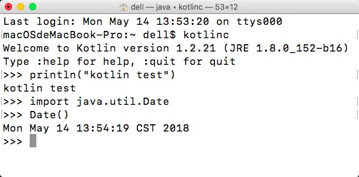

<!DOCTYPE html>
  <html>
    <head>
      <title>Kotlin</title>
      <meta charset="utf-8">
      <meta name="viewport" content="width=device-width, initial-scale=1.0">
      
      <link rel="stylesheet" href="file:////Users/dell/.vscode/extensions/shd101wyy.markdown-preview-enhanced-0.3.5/node_modules/@shd101wyy/mume/dependencies/katex/katex.min.css">
      
      
      
      
      
      
      
      
      
      

      <style> 
      /**
 * prism.js Github theme based on GitHub's theme.
 * @author Sam Clarke
 */
code[class*="language-"],
pre[class*="language-"] {
  color: #333;
  background: none;
  font-family: Consolas, "Liberation Mono", Menlo, Courier, monospace;
  text-align: left;
  white-space: pre;
  word-spacing: normal;
  word-break: normal;
  word-wrap: normal;
  line-height: 1.4;

  -moz-tab-size: 8;
  -o-tab-size: 8;
  tab-size: 8;

  -webkit-hyphens: none;
  -moz-hyphens: none;
  -ms-hyphens: none;
  hyphens: none;
}

/* Code blocks */
pre[class*="language-"] {
  padding: .8em;
  overflow: auto;
  /* border: 1px solid #ddd; */
  border-radius: 3px;
  /* background: #fff; */
  background: #f5f5f5;
}

/* Inline code */
:not(pre) > code[class*="language-"] {
  padding: .1em;
  border-radius: .3em;
  white-space: normal;
  background: #f5f5f5;
}

.token.comment,
.token.blockquote {
  color: #969896;
}

.token.cdata {
  color: #183691;
}

.token.doctype,
.token.punctuation,
.token.variable,
.token.macro.property {
  color: #333;
}

.token.operator,
.token.important,
.token.keyword,
.token.rule,
.token.builtin {
  color: #a71d5d;
}

.token.string,
.token.url,
.token.regex,
.token.attr-value {
  color: #183691;
}

.token.property,
.token.number,
.token.boolean,
.token.entity,
.token.atrule,
.token.constant,
.token.symbol,
.token.command,
.token.code {
  color: #0086b3;
}

.token.tag,
.token.selector,
.token.prolog {
  color: #63a35c;
}

.token.function,
.token.namespace,
.token.pseudo-element,
.token.class,
.token.class-name,
.token.pseudo-class,
.token.id,
.token.url-reference .token.variable,
.token.attr-name {
  color: #795da3;
}

.token.entity {
  cursor: help;
}

.token.title,
.token.title .token.punctuation {
  font-weight: bold;
  color: #1d3e81;
}

.token.list {
  color: #ed6a43;
}

.token.inserted {
  background-color: #eaffea;
  color: #55a532;
}

.token.deleted {
  background-color: #ffecec;
  color: #bd2c00;
}

.token.bold {
  font-weight: bold;
}

.token.italic {
  font-style: italic;
}


/* JSON */
.language-json .token.property {
  color: #183691;
}

.language-markup .token.tag .token.punctuation {
  color: #333;
}

/* CSS */
code.language-css,
.language-css .token.function {
  color: #0086b3;
}

/* YAML */
.language-yaml .token.atrule {
  color: #63a35c;
}

code.language-yaml {
  color: #183691;
}

/* Ruby */
.language-ruby .token.function {
  color: #333;
}

/* Markdown */
.language-markdown .token.url {
  color: #795da3;
}

/* Makefile */
.language-makefile .token.symbol {
  color: #795da3;
}

.language-makefile .token.variable {
  color: #183691;
}

.language-makefile .token.builtin {
  color: #0086b3;
}

/* Bash */
.language-bash .token.keyword {
  color: #0086b3;
}html body{font-family:"Helvetica Neue",Helvetica,"Segoe UI",Arial,freesans,sans-serif;font-size:16px;line-height:1.6;color:#333;background-color:#fff;overflow:initial;box-sizing:border-box;word-wrap:break-word}html body>:first-child{margin-top:0}html body h1,html body h2,html body h3,html body h4,html body h5,html body h6{line-height:1.2;margin-top:1em;margin-bottom:16px;color:#000}html body h1{font-size:2.25em;font-weight:300;padding-bottom:.3em}html body h2{font-size:1.75em;font-weight:400;padding-bottom:.3em}html body h3{font-size:1.5em;font-weight:500}html body h4{font-size:1.25em;font-weight:600}html body h5{font-size:1.1em;font-weight:600}html body h6{font-size:1em;font-weight:600}html body h1,html body h2,html body h3,html body h4,html body h5{font-weight:600}html body h5{font-size:1em}html body h6{color:#5c5c5c}html body strong{color:#000}html body del{color:#5c5c5c}html body a:not([href]){color:inherit;text-decoration:none}html body a{color:#08c;text-decoration:none}html body a:hover{color:#00a3f5;text-decoration:none}html body img{max-width:100%}html body>p{margin-top:0;margin-bottom:16px;word-wrap:break-word}html body>ul,html body>ol{margin-bottom:16px}html body ul,html body ol{padding-left:2em}html body ul.no-list,html body ol.no-list{padding:0;list-style-type:none}html body ul ul,html body ul ol,html body ol ol,html body ol ul{margin-top:0;margin-bottom:0}html body li{margin-bottom:0}html body li.task-list-item{list-style:none}html body li>p{margin-top:0;margin-bottom:0}html body .task-list-item-checkbox{margin:0 .2em .25em -1.8em;vertical-align:middle}html body .task-list-item-checkbox:hover{cursor:pointer}html body blockquote{margin:16px 0;font-size:inherit;padding:0 15px;color:#5c5c5c;border-left:4px solid #d6d6d6}html body blockquote>:first-child{margin-top:0}html body blockquote>:last-child{margin-bottom:0}html body hr{height:4px;margin:32px 0;background-color:#d6d6d6;border:0 none}html body table{margin:10px 0 15px 0;border-collapse:collapse;border-spacing:0;display:block;width:100%;overflow:auto;word-break:normal;word-break:keep-all}html body table th{font-weight:bold;color:#000}html body table td,html body table th{border:1px solid #d6d6d6;padding:6px 13px}html body dl{padding:0}html body dl dt{padding:0;margin-top:16px;font-size:1em;font-style:italic;font-weight:bold}html body dl dd{padding:0 16px;margin-bottom:16px}html body code{font-family:Menlo,Monaco,Consolas,'Courier New',monospace;font-size:.85em !important;color:#000;background-color:#f0f0f0;border-radius:3px;padding:.2em 0}html body code::before,html body code::after{letter-spacing:-0.2em;content:"\00a0"}html body pre>code{padding:0;margin:0;font-size:.85em !important;word-break:normal;white-space:pre;background:transparent;border:0}html body .highlight{margin-bottom:16px}html body .highlight pre,html body pre{padding:1em;overflow:auto;font-size:.85em !important;line-height:1.45;border:#d6d6d6;border-radius:3px}html body .highlight pre{margin-bottom:0;word-break:normal}html body pre code,html body pre tt{display:inline;max-width:initial;padding:0;margin:0;overflow:initial;line-height:inherit;word-wrap:normal;background-color:transparent;border:0}html body pre code:before,html body pre tt:before,html body pre code:after,html body pre tt:after{content:normal}html body p,html body blockquote,html body ul,html body ol,html body dl,html body pre{margin-top:0;margin-bottom:16px}html body kbd{color:#000;border:1px solid #d6d6d6;border-bottom:2px solid #c7c7c7;padding:2px 4px;background-color:#f0f0f0;border-radius:3px}@media print{html body{background-color:#fff}html body h1,html body h2,html body h3,html body h4,html body h5,html body h6{color:#000;page-break-after:avoid}html body blockquote{color:#5c5c5c}html body pre{page-break-inside:avoid}html body table{display:table}html body img{display:block;max-width:100%;max-height:100%}html body pre,html body code{word-wrap:break-word;white-space:pre}}.markdown-preview{width:100%;height:100%;box-sizing:border-box}.markdown-preview .pagebreak,.markdown-preview .newpage{page-break-before:always}.markdown-preview pre.line-numbers{position:relative;padding-left:3.8em;counter-reset:linenumber}.markdown-preview pre.line-numbers>code{position:relative}.markdown-preview pre.line-numbers .line-numbers-rows{position:absolute;pointer-events:none;top:1em;font-size:100%;left:0;width:3em;letter-spacing:-1px;border-right:1px solid #999;-webkit-user-select:none;-moz-user-select:none;-ms-user-select:none;user-select:none}.markdown-preview pre.line-numbers .line-numbers-rows>span{pointer-events:none;display:block;counter-increment:linenumber}.markdown-preview pre.line-numbers .line-numbers-rows>span:before{content:counter(linenumber);color:#999;display:block;padding-right:.8em;text-align:right}.markdown-preview .mathjax-exps .MathJax_Display{text-align:center !important}.markdown-preview:not([for="preview"]) .code-chunk .btn-group{display:none}.markdown-preview:not([for="preview"]) .code-chunk .status{display:none}.markdown-preview:not([for="preview"]) .code-chunk .output-div{margin-bottom:16px}.scrollbar-style::-webkit-scrollbar{width:8px}.scrollbar-style::-webkit-scrollbar-track{border-radius:10px;background-color:transparent}.scrollbar-style::-webkit-scrollbar-thumb{border-radius:5px;background-color:rgba(150,150,150,0.66);border:4px solid rgba(150,150,150,0.66);background-clip:content-box}html body[for="html-export"]:not([data-presentation-mode]){position:relative;width:100%;height:100%;top:0;left:0;margin:0;padding:0;overflow:auto}html body[for="html-export"]:not([data-presentation-mode]) .markdown-preview{position:relative;top:0}@media screen and (min-width:914px){html body[for="html-export"]:not([data-presentation-mode]) .markdown-preview{padding:2em calc(50% - 457px)}}@media screen and (max-width:914px){html body[for="html-export"]:not([data-presentation-mode]) .markdown-preview{padding:2em}}@media screen and (max-width:450px){html body[for="html-export"]:not([data-presentation-mode]) .markdown-preview{font-size:14px !important;padding:1em}}@media print{html body[for="html-export"]:not([data-presentation-mode]) #sidebar-toc-btn{display:none}}html body[for="html-export"]:not([data-presentation-mode]) #sidebar-toc-btn{position:fixed;bottom:8px;left:8px;font-size:28px;cursor:pointer;color:inherit;z-index:99;width:32px;text-align:center;opacity:.4}html body[for="html-export"]:not([data-presentation-mode])[html-show-sidebar-toc] #sidebar-toc-btn{opacity:1}html body[for="html-export"]:not([data-presentation-mode])[html-show-sidebar-toc] .md-sidebar-toc{position:fixed;top:0;left:0;width:300px;height:100%;padding:32px 0 48px 0;font-size:14px;box-shadow:0 0 4px rgba(150,150,150,0.33);box-sizing:border-box;overflow:auto;background-color:inherit}html body[for="html-export"]:not([data-presentation-mode])[html-show-sidebar-toc] .md-sidebar-toc::-webkit-scrollbar{width:8px}html body[for="html-export"]:not([data-presentation-mode])[html-show-sidebar-toc] .md-sidebar-toc::-webkit-scrollbar-track{border-radius:10px;background-color:transparent}html body[for="html-export"]:not([data-presentation-mode])[html-show-sidebar-toc] .md-sidebar-toc::-webkit-scrollbar-thumb{border-radius:5px;background-color:rgba(150,150,150,0.66);border:4px solid rgba(150,150,150,0.66);background-clip:content-box}html body[for="html-export"]:not([data-presentation-mode])[html-show-sidebar-toc] .md-sidebar-toc a{text-decoration:none}html body[for="html-export"]:not([data-presentation-mode])[html-show-sidebar-toc] .md-sidebar-toc ul{padding:0 1.6em;margin-top:.8em}html body[for="html-export"]:not([data-presentation-mode])[html-show-sidebar-toc] .md-sidebar-toc li{margin-bottom:.8em}html body[for="html-export"]:not([data-presentation-mode])[html-show-sidebar-toc] .md-sidebar-toc ul{list-style-type:none}html body[for="html-export"]:not([data-presentation-mode])[html-show-sidebar-toc] .markdown-preview{left:300px;width:calc(100% -  300px);padding:2em calc(50% - 457px -  150px);margin:0;box-sizing:border-box}@media screen and (max-width:1274px){html body[for="html-export"]:not([data-presentation-mode])[html-show-sidebar-toc] .markdown-preview{padding:2em}}@media screen and (max-width:450px){html body[for="html-export"]:not([data-presentation-mode])[html-show-sidebar-toc] .markdown-preview{width:100%}}html body[for="html-export"]:not([data-presentation-mode]):not([html-show-sidebar-toc]) .markdown-preview{left:50%;transform:translateX(-50%)}html body[for="html-export"]:not([data-presentation-mode]):not([html-show-sidebar-toc]) .md-sidebar-toc{display:none}
/* Please visit the URL below for more information: */
/*   https://shd101wyy.github.io/markdown-preview-enhanced/#/customize-css */
 
      </style>
    </head>
    <body for="html-export">
      <div class="mume markdown-preview   ">
      <h2 class="mume-header" id="kotlin%E5%9F%BA%E7%A1%80%E8%AF%AD%E6%B3%95%E6%95%99%E7%A8%8B%E4%B8%80">Kotlin基础语法教程（一）</h2>

<h3 class="mume-header" id="kotlin%E6%A6%82%E8%BF%B0">Kotlin概述</h3>

<p>Kotlin是由开发过IntelliJ IDEA、Android Studio、PyCharm等IDE的著名IDE厂商JetBrains公司设计并开源的编程语言。2011年7月推出的Kotlin项目深受《Effective Java》的影响，直到2016年2月15日第一个官方稳定版本Kotlin v1.0才正式发布，2017年Google I/O开发者大会中，Google宣布Kotlin成为Android开发的一级语言，Kotlin “转正”。</p>
<p>Kotlin是一种运行在JVM上的静态类型编程语言，可以编译为Java字节码，同时也可以编译成JavaScript、本地(Native)代码，方便在没有JVM的设备上运行。Kotlin语言具有以下特点：</p>
<ul>
<li>与Java的编译、运行速度相似</li>
<li>比Java更安全、简洁</li>
<li>比Kotlin的最成熟的竞争者Scala更简洁</li>
</ul>
<p>Kotlin在语法上具有很多下一代编程语言静态语言特性：如类型推断、函数式编程、多范式支持、可空性表达、扩展函数、模式匹配等。</p>
<p>Kotlin与Java具有良好的兼容性，与Java高度可互操作，在同一项目的开发中可以同时使用两种语言进行编写。IntelliJ IDEA提供了Java代码到Kotlin代码的转换功能，您只需将Java代码拷贝粘贴到.kt文件中，IDE就会自动将其转换为Kotlin代码，方便Java学习者顺利过渡到Kotlin。</p>
<p>Kotlin支持像Python一样的REPL环境，可以很方便的进行代码测试，对于语言的学习十分有帮助，配置环境变量后只需要在命令行输入kotlinc，即可开启REPL环境。</p>
<p></p>
<p>这篇文章面向有Java语言基础的对Kotlin有兴趣的读者，内容比较基础，主要通过两种语言的对比进行说明。</p>
<h3 class="mume-header" id="%E5%9F%BA%E7%A1%80%E8%AF%AD%E6%B3%95">基础语法</h3>

<h4 class="mume-header" id="hello-world">Hello World</h4>

<p></p>
<p>如图所示，使用IntelliJ IDEA新建项目时可选择Java，同时在右侧勾选Kotlin/JVM，或者直接新建Kotlin项目。</p>
<pre data-role="codeBlock" data-info="" class="language-"><code>fun main(args: Array&lt;String&gt;) {
    println(&quot;hello world&quot;)
}
</code></pre><p>上述Kotlin代码的作用就是输出<code>hello world</code>，看起来比Java等语言简单得多，Kotlin中通过<code>fun</code>关键字声明一个函数，<code>main</code>是函数名，在这里是应用程序的入口；<code>args</code>是参数，这里代表命令行参数，它的类型是字符串数组，需要注意的是Kotlin的变量名通常写在类型的前面，中间用冒号分开。</p>
<p><code>println()</code>是Kotlin中的顶层函数，对应Java中的<code>System.out.println()</code>函数，顶层函数不属于任何类，可以直接拿来用，类似用法的顶层函数还有<code>print()</code>等。</p>
<p>Kotlin的语句最后的分号不是必须的，只有当多个语句写在同一行时，才必须用分号加以区分。</p>
<h4 class="mume-header" id="%E5%B8%B8%E9%87%8F%E5%92%8C%E5%8F%98%E9%87%8F">常量和变量</h4>

<pre data-role="codeBlock" data-info="" class="language-"><code>var a = 1
const val b = 2

fun main(args: Array&lt;String&gt;) {
    a = 2
    b = 1            //&#x7F16;&#x8BD1;&#x9519;&#x8BEF;
    const val c = 3  //&#x7F16;&#x8BD1;&#x9519;&#x8BEF;
    c = 1            //&#x7F16;&#x8BD1;&#x9519;&#x8BEF;
    val d = 4
    d = 1            //&#x7F16;&#x8BD1;&#x9519;&#x8BEF;
    var e: Float = 5.0f
    e = 1
}
//&#x58F0;&#x660E;&#x5BF9;&#x8C61;
object Test {
    const val TEST = 100
}
</code></pre><p>Kotlin中声明变量通常使用<code>val/var 变量名: 变量类型 = 表达式</code>，如上述代码中的变量<code>e</code>，Kotlin语言支持变量类型的自动推断，通常都不需要显式的声明变量类型。</p>
<p>Kotlin变量分为<code>var</code>(可变变量)和<code>val</code>(只读变量，也称不可变变量、运行期常量)，其中<code>var</code>是可写的，在它的生命周期中可以被多次赋值，如上述代码中的<code>a</code>和<code>e</code>；而<code>val</code>是只读的，它是在运行时初始化的，但仅能赋值一次，如对<code>d</code>重新赋值会发生编译错误，只读变量相当于Java中用<code>final</code>修饰的变量。只读变量的值只能被修改一次，并且不能被覆盖，这可以避免变量的值被错误的修改。</p>
<p>Kotlin的常量（编译期常量）用<code>const val</code>声明，仅能用于顶层常量和对象中的常量声明，如上述代码中的<code>b</code>和<code>Test</code>对象中的<code>TEST</code>常量，在函数中声明的<code>c</code>则会发生编译错误，编译期常量相当于Java中用<code>public final static</code>修饰的常量，Kotlin中的常量只能是String类型或基本数据类型。</p>
<h4 class="mume-header" id="%E5%87%BD%E6%95%B0%E5%A3%B0%E6%98%8E">函数声明</h4>

<p>Kotlin既有独立于类的顶层函数，也有类方法，为了避免混淆，这里统称为函数。上述<code>main</code>中演示了参数的定义，下面的代码中演示了返回值，返回值应在函数的参数列表括号之后显式地声明。</p>
<pre data-role="codeBlock" data-info="" class="language-"><code>fun getMax(a: Int, b: Int): Int {
    if (a &gt; b) {
        return a
    } else {
        return b
    }
}
</code></pre><h4 class="mume-header" id="%E6%B5%81%E7%A8%8B%E6%8E%A7%E5%88%B6">流程控制</h4>

<p>Kotlin简化了Java中的一些语句，将其变为具有返回值的表达式，主要有<code>if</code>表达式、<code>when</code>表达式、<code>try</code>表达式、表达式函数体，示例代码如下：</p>
<pre data-role="codeBlock" data-info="" class="language-"><code>fun main(args: Array&lt;String&gt;) {
    var a = 1
    var b = 2
    //if&#x8868;&#x8FBE;&#x5F0F;&#xFF0C;&#x53EF;&#x4EE5;&#x81EA;&#x52A8;&#x63A8;&#x65AD;&#x51FA;max&#x7684;&#x7C7B;&#x578B;&#x662F;Int&#xFF0C;&#x4E0D;&#x9700;&#x8981;&#x663E;&#x5F0F;&#x58F0;&#x660E;
    val max = if(a &gt; b) a else b
    //&#x5BF9;&#x53EF;&#x53D8;&#x53D8;&#x91CF;&#x91CD;&#x65B0;&#x8D4B;&#x503C;
    a = 5
    b = 3
    //&#x8C03;&#x7528;&#x4E0B;&#x9762;&#x5B9A;&#x4E49;&#x7684;getMin&#x51FD;&#x6570;
    val min = getMin(a, b)
}
//&#x8868;&#x8FBE;&#x5F0F;&#x51FD;&#x6570;&#x4F53;&#xFF0C;&#x8FD4;&#x56DE;&#x503C;&#x662F;&#x6267;&#x884C;&#x5230;&#x7684;&#x8BED;&#x53E5;&#x5757;&#x7684;&#x6700;&#x540E;&#x4E00;&#x6761;&#x8BED;&#x53E5;
fun getMin(a: Int, b: Int) = if(a &gt; b) {
    println(&quot;b &lt; a&quot;)
    b       //if&#x8868;&#x8FBE;&#x5F0F;&#x7684;&#x8FD4;&#x56DE;&#x503C;
} else {
    println(&quot;a &lt; b&quot;)
    a       //if&#x8868;&#x8FBE;&#x5F0F;&#x7684;&#x8FD4;&#x56DE;&#x503C;
}
</code></pre><p>Kotlin放弃了C和Java中的<code>switch</code>语句，采用一个新的<code>when</code>语句/表达式，相比<code>switch</code>，<code>when</code>要更加的强大、灵活。</p>
<p><code>when</code>是一个多分支的结构，像<code>if</code>一样，<code>when</code>的每一个分支都可以是一个代码块，<code>when</code>具有返回值，它的值是块中最后的表达式的值。可以用任意表达式（不只是常量）作为分支条件，也可以把多个分支条件通过逗号放在一起，还可以用<code>in</code>和<code>!in</code>加上一个区间检测一个值是否在一个区间或者集合中，如果所有分支都不满足，则会执行<code>else</code>分支（可以没有）。</p>
<pre data-role="codeBlock" data-info="" class="language-"><code>fun main(args: Array&lt;String&gt;) {

    val score = 98
    val result = when (score) {
        97, 98, 99 -&gt; &quot;&#x63A5;&#x8FD1;&#x6EE1;&#x5206;&#x4E86;&quot;
        in 90..96, 100 -&gt; {
            println(&quot;&#x4F18;&quot;)
            &quot;&#x4F18;&#x79C0;&quot;
        }
        in 60..89 -&gt; &quot;&#x53CA;&#x683C;&quot;
        in 0..59 -&gt; &quot;&#x4E0D;&#x53CA;&#x683C;&quot;
        else -&gt; {
            println(&quot;&#x6210;&#x7EE9;&#x8F93;&#x5165;&#x4E0D;&#x6B63;&#x786E;&quot;)
            null
        }
    }
}
</code></pre>
      </div>
      
      
    </body>
    
    
    
    
    
    
    
  </html>